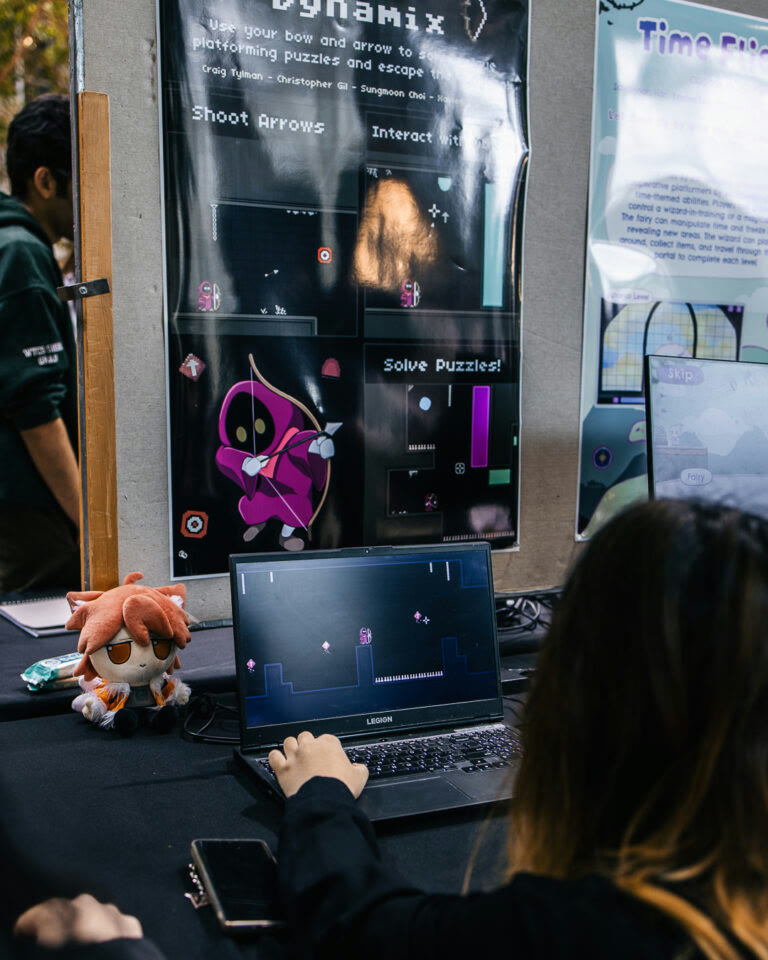

The bow is the puzzle tool
The player wakes in a mysterious dungeon with only a bow and arrow. Objects scattered through each room react when shot, turning aiming and experimentation into the central way to understand the environment.
Game Development · Unity · C#
A 2D puzzle platformer where every arrow can reveal a path forward. Our four-person team built the game in Unity and presented it to a busy crowd at the 2024 Queen's Creative Computing Showcase.

Platforming, adventure, aim-and-shoot interactions, and environmental puzzles.
Custom gameplay scripts for movement, physics, and object dynamics.
Built collaboratively through design, engineering, testing, and presentation.
Playable directly in a browser or as a downloadable Windows build.
A compact main experience with escalating mechanics and bonus content.
Promoted through itch.io and a live public showcase at Queen's University.
The player wakes in a mysterious dungeon with only a bow and arrow. Objects scattered through each room react when shot, turning aiming and experimentation into the central way to understand the environment.
Players combine movement, jumping, and accurate shots to activate mechanisms, avoid hazards, navigate obstacles, and uncover the route out. New interactions expand the puzzle vocabulary as the game progresses.
I developed custom C# scripts supporting player movement, physics behavior, and the feel of the core platforming controls.
I helped engineer the interactive systems that let arrows affect objects and turn environmental elements into puzzle mechanics.
I coordinated marketing work, including the poster, showcase presentation, and itch.io page that attracted more than 600 visits.
The released itch.io build is rated 5 out of 5 stars. Players highlighted its balanced challenge, evolving mechanics, level design, clever puzzles, and unexpectedly substantial bonus content.
“Phenomenal level design.”
7Breadian on itch.io
“I absolutely love the gameplay, and the clever puzzles!”
NetBa on itch.io
“So creative and well thought out.”
Morphious86 on itch.io
Arrow Dynamix was one of the projects presented alongside 55 student teams at the 2024 showcase. Visitors stopped throughout the event to play, watch, ask questions, and try their hand at escaping the dungeon.
The hero image and first two gallery photographs are courtesy of Queen's School of Computing. Remaining photographs were taken by Christopher Gil Icaza.